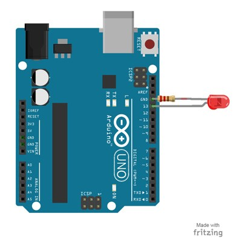

The first project is one of the most basic and simple circuits you can create with Arduino. This project will test your Arduino by blinking an LED that is connected directly to the board.
Parts Needed
- (1) Arduino Uno
- (1) USB A-to-B Cable
- (1) LED 5mm
- (1) 220 Ω Resistor
Project Diagram
Project Steps
- Twist a 220 Ω resistor to the long leg (+) of the LED.
- Push the short leg of the LED into the ground (GND) pin on the board.
- Push the resistor leg that’s connected to the LED into the #13 pin.
Project Code
- Connect the Arduino board to your computer using the USB cable.
- Open project code – Circuit_01_TestArduino
- Select the board and serial port as outlined in earlier section.
- Click upload button to send sketch to the Arduino.